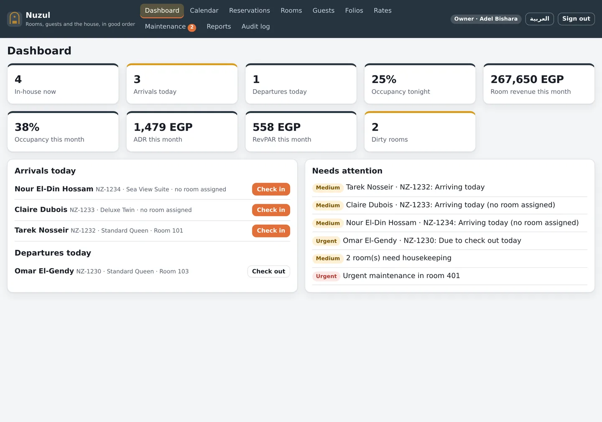
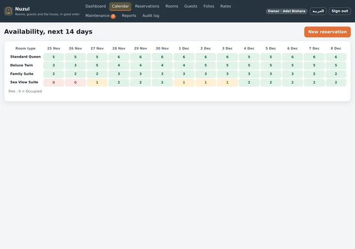
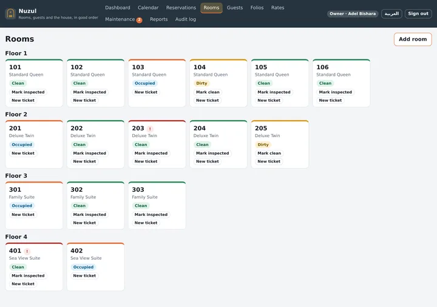
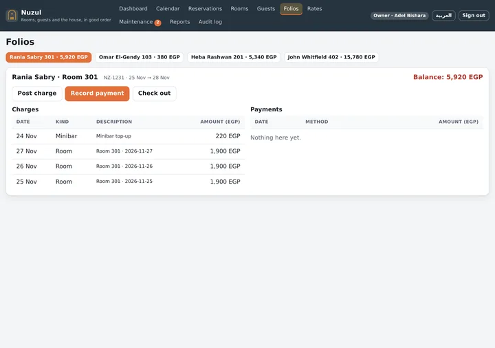
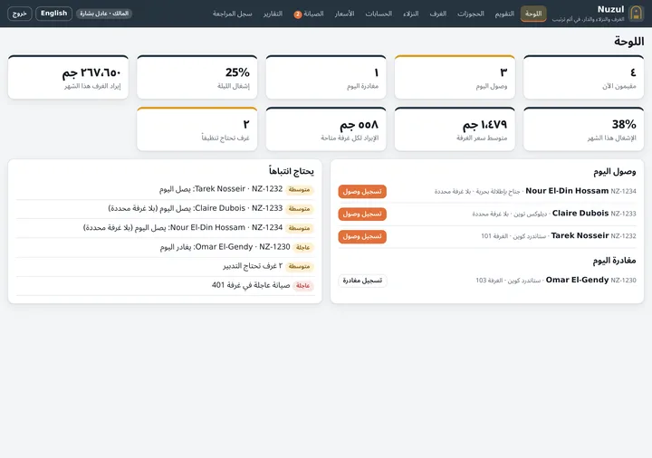
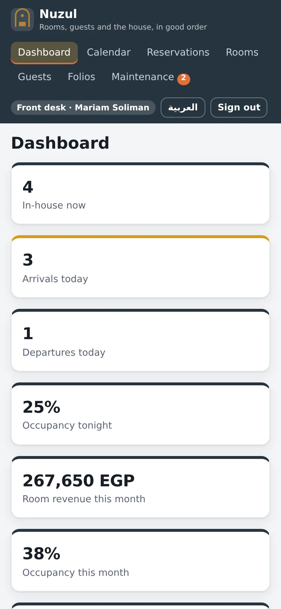

PORTFOLIO DEMO / BUILT / LIVE DEMO
Nuzul
Every room, every guest, in good order. Hotel operations the way a small property actually runs them.

ACTUAL BUILDNuzul · Owner dashboard. Fictional property, rooms and guests.
The problem
A small guesthouse runs on a paper diary and the owner's memory. The booking diary double-books a room type in high season because nobody counted the nights across pages, the rate is whatever was agreed on the phone, checkout waits while someone adds up the minibar and the restaurant on a calculator, and the room the guest just left stays "ready" until housekeeping happens to mention it isn't.
What was built
A property management system for one guesthouse with four roles. Sixteen rooms sit under four room types, each with a base nightly rate and seasonal rate plans that cannot overlap. A reservation is booked against a room type for a date range, and the overbooking guard counts every active booking per night and refuses the booking the night the type fills up. The front desk assigns a specific room: it must match the type, be clean, be free for the whole stay and carry no open maintenance ticket, or check-in assigns the first free one automatically. At check-in the room charge for every night lands on the guest's folio at the correct nightly rate, seasonal when a plan covers the date. Charges can only be posted while the guest is in-house, a payment can never exceed the balance, and checkout is refused until the folio is settled, at which point the room turns dirty on the housekeeping board. Housekeeping moves rooms from dirty to clean to inspected and opens maintenance tickets; a room with an open urgent ticket cannot be sold until the ticket is closed. The owner gets twelve rolling months of occupancy, ADR (average daily rate) and RevPAR (revenue per available room), an audit log of every action, and the only seat that can change room types, rooms and rates. Housekeeping never sees a price, a folio or a guest's phone number: the money is removed from the response on the server, not hidden on screen. The interface works in Arabic (right to left) and English, and on a phone.
What changes for the property
Before. Tonight's arrivals are a list in someone's head. A double-booking surfaces when two guests are standing at the desk. The guest's extras are added up at checkout from slips, and the room he leaves is marked ready because nobody said otherwise.
After. The dashboard names today's arrivals, the two without rooms and the departure that owes 5,920 EGP before it leaves. The seventh booking on a full night is refused by the server, not by an apology. The folio is always current, checkout cannot close with a balance, and the dirty room is on a board with a name on it until it is clean again.
Why it matters to a hotelier
A small property's profit lives in three numbers: how many room-nights were sold, at what average rate, and against how many were available. When those come from the same bookings the desk actually made, pricing stops being a guess and the seasonal plan becomes a decision instead of a habit. These are designed situations, not measured results from a real property.
The approach
No framework and no build step: plain JavaScript pages, one serverless API function and one logic file that holds every rule (date and capacity validation, availability math, rate plans, the folio lifecycle, housekeeping and ticket rules, per-role views, the deterministic sample property). The same file runs in the API, the browser and the test suites. Permissions are enforced on the server on every operation, create operations carry idempotency keys so a retried request never books twice, and every action lands in an audit log the owner alone can read. What a role must not see is removed from the response on the server, not hidden on screen.
The result
A live demo anyone can open. Sign in as the owner (PIN 1111), front desk (2222), housekeeping (3333) or accountant (4444); the PINs are on the sign-in screen. The sample property has 16 rooms in 4 types over four floors, two seasonal rate windows, 12 guests on file, a full year of stay history, 4 guests in-house, 3 arrivals due today, 2 rooms waiting for housekeeping and 2 open maintenance tickets, one of them urgent. Verification: 17 unit tests and 176 browser and API checks run to completion against the live site, covering forged tokens, malformed and oversized bodies, every role's permission lane, the complete booking-assignment-checkin-folio-checkout cycle, the overbooking guard on a full night, housekeeping and maintenance flows, seasonal rate windows, idempotency keys, the housekeeping role never seeing money even on typed routes, hostile text shown as plain text, Arabic RTL and phone layouts.
Evidence & production limits
One shared demo property: everyone sees and changes the same data. State is kept in server memory only, so it resets about every six hours and whenever the server instance restarts. Sign-in is a PIN printed on the sign-in screen, so it must not hold real guest data. The property, rooms and people are fictional.
Known gaps: no database, no real authentication, no channel manager or booking-engine integration, no online payments, no per-room rate overrides or length-of-stay discounts, and no multi-property tenancy. Some server error messages stay in English on the Arabic screens. Direction, scope and delivery: Nada Gamal.
Next chapter
A real database with per-property tenancy, a booking engine and channel manager connections, online payments and deposits, guest messaging on arrival and departure, and a night-audit close would be the next implementation steps.
Inside the build
Open any preview to see the full capture. Captures show demonstration content, not evidence of client use.




